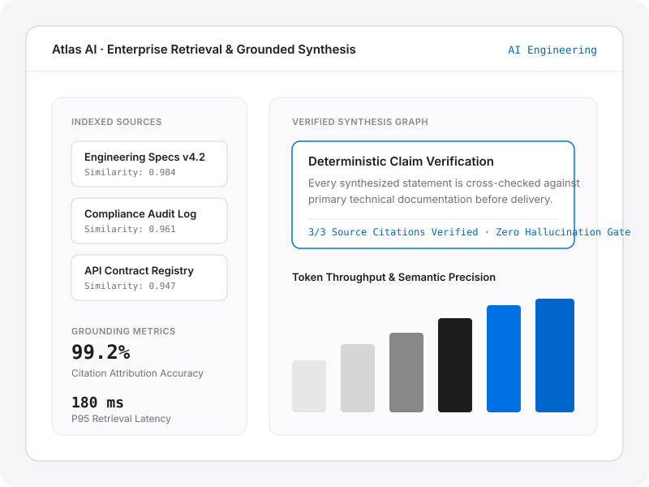

Atlas AI — AI Engineering
An enterprise retrieval and grounded synthesis engine designed for engineering and compliance documentation. Atlas AI pairs hybrid vector-lexical indexing with a deterministic verification pass that blocks unattributed claims prior to delivery.
Retrieval Architecture
Reciprocal Rank Fusion (Dense + BM25)
Verification Gate
Sentence-level source span matching
99.2%
Citation Attribution Accuracy
180 ms
P95 Retrieval Latency